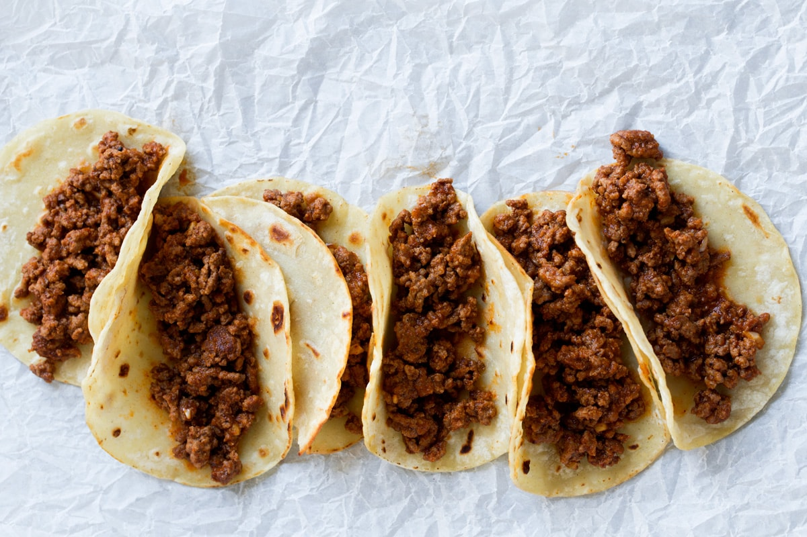

Tacos

Go back
What is it?
This is not a recipe for authentic, street food tacos. These are the type of tacos you're gonna eat cold over the sink, acceptably lukewarm from the microwave, at 2 AM. They're still gonna be banging, though.
Ingredients
- Ground beef
- Tortilla wraps
- Taco seasoning
- Maybe some onion or something, if you're into that type of thing.
Instructions
- Remove ground beef from your fridge. Sit it on the counter for about half an hour so it doesn't go into the pan stone cold. This will help the browning process and prevent the meat from becoming a nasty greyish color
- Add a very small amount of oil to a hot pan, add only enough so that the meat doesn't stick or burn!
- Pop your ground beef in there and let it get very dark brown and crispy on some of the edges
- Once the meat is mostly browned (some pink left is alright, as it'll continue to cook), add your taco seasoning to the appropriate amount of water as listed on the package. Mix it up thoroughly and add it to the meat. Allow it to simmer on low heat until it's thick enough.
- Bring out the tortillas. Add beef to the tortilla. Fold it up and consume,